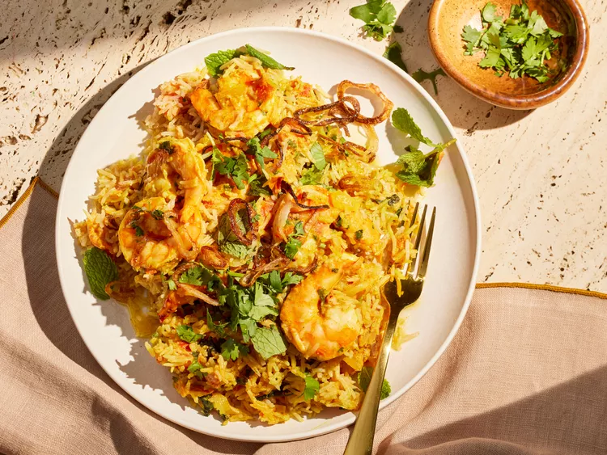

Shrimp Biryani

Description
Shrimp Biryani is a culinary masterpiece that combines the succulent flavors of fresh shrimp
with the aromatic allure of basmati raice and a symphony of spices. The dish begins with juicy
shrimp marinated in a rich blend of yogurt, tumeric, cumin, coriander, and garam masala,
ensuring each bite bursts with flavour.
The shrimp are then layered with partially cooked basmati rice, which is known for its long
grains and fragrant aroma. As the disk cooks slowly, the spices infuse into the rice, and the
shrimp become tender and flavourful, creating a harmonious blend that is both comforting and
exotic.
Ingredients
- 2 cups of uncooked aged basmati rice
- 6 tablespoons ghee, divided, plus more for drizzling
- 1 tablespoon plus 2 1/2 teaspoons garam masala, divided
- 3 1/2 teaspoons kosher salt, divided
- 2 teaspoons grated garlic, divided
- 2 teaspoons grated fresh ginger, divided
- 1 teaspoon ground coriander, divided
- 2 1/4 cups water
- 1/2 cup plain whole-milk strained (Greek-style) yogurt
- 1/4 teaspoon cayenne pepper
- 1 pound large raw shrimp - peeled, deveined, and tails removed
- 1/2 cup chopped yellow onion
- 2 1/2 cups chopped plum tomatoes
- 1 teaspoon ground turmeric
- 1/2 cup fresh cilantro, divided
- 2 tablespoons fresh mint, divided
- 1/4 cup crispy fried onions or shallots, or as needed
Steps
- Gather all ingredients
- Place rice in a large bowl, and cover with cold running water. Agitate with hands to release excess starch, and pour off water. Repeat process until water is mostly clear, 4 to 5 times.
- Heat 2 tablespoons of the ghee in a medium saucepan over medium-high heat. Add 1 tablespoon garam masala, 2 teaspoons salt, 1 teaspoon each of grated garlic and ginger, and 1/2 teaspoon coriander. Cook, stirring constantly, until fragrant, about 1 minute. Add rice, and cook, stirring constantly, until rice is well coated in ghee and spices, 1 to 2 minutes.
- Add 2 1/4 cups water, and stir. Bring to a boil over high heat. Stir, and cover with a tight-fitting lid. Reduce heat to medium-low. Simmer, undisturbed, until rice is just tender, about 12 minutes. Remove from heat, and remove lid. Fluff with a fork, and set aside.
- Meanwhile, whisk together yogurt, cayenne, 1/2 teaspoon garam masala, and 1/2 teaspoon salt. Add shrimp, and toss to fully coat; set aside.
- Preheat the oven to 350 degrees F (175 degrees C).
- Heat 2 tablespoons of ghee over medium-high heat in a Dutch oven or large oven-safe nonstick saucepan. Add onion, and cook, stirring occasionally, until starting to soften, about 4 minutes. Add tomatoes, and cook, stirring occasionally, until they start to release liquid and soften, about 3 minutes. Add 1/2 teaspoon turmeric, remaining 2 teaspoons garam masala, remaining 1 teaspoon salt, remaining 1 teaspoon each garlic and ginger, and remaining 1/2 teaspoon coriander. Cook, stirring constantly, until fragrant, about 1 minute. Reduce heat to medium, and cook, stirring occasionally, until tomatoes have mostly broken down and mixture resembles a tomato sauce in texture, about 8 minutes.
- Remove from heat, and add shrimp mixture, stirring constantly, until well combined. Stir in 1/4 cup cilantro and 1 tablespoon mint. Remove half (about 1 heaping cup) of the shrimp mixture from Dutch oven, and set aside in a medium bowl. Spread remaining shrimp mixture in the Dutch oven into an even layer. Add half (about 3 cups) of cooked rice mixture over shrimp mixture. Add reserved 1 heaping cup shrimp mixture over rice. Sprinkle with 2 tablespoons cilantro and 1/2 tablespoon mint. Add remaining rice mixture over shrimp mixture, and spread into an even layer.
- Melt remaining 2 tablespoons ghee in a small bowl, and stir in remaining 1/2 teaspoon turmeric. Drizzle over rice mixture. Place a lid on Dutch oven.
- Bake in the preheated oven until shrimp finishes cooking, 13 to 15 minutes. Remove from oven, and remove lid. Shrimp will be bright pink outside and meat will be opaque,. Top with remaining 2 tablespoons cilantro and 1/2 tablespoon mint. Top with fried onions and drizzle with melted ghee, as desired. Serve immediately.